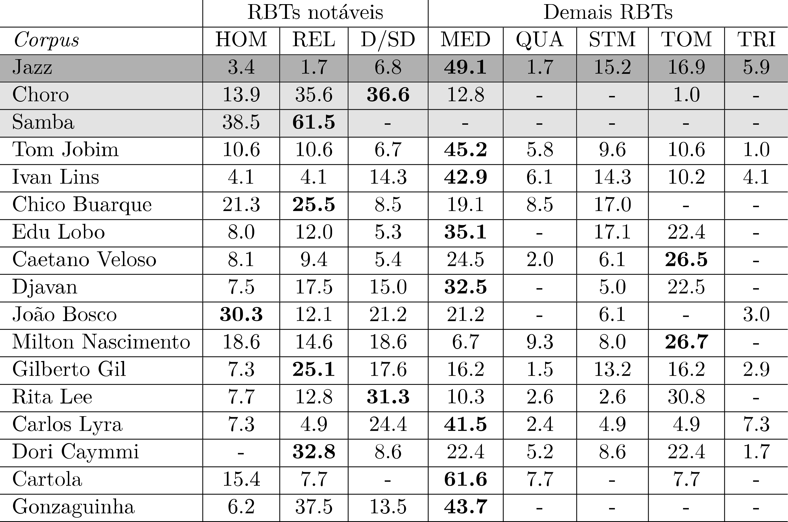
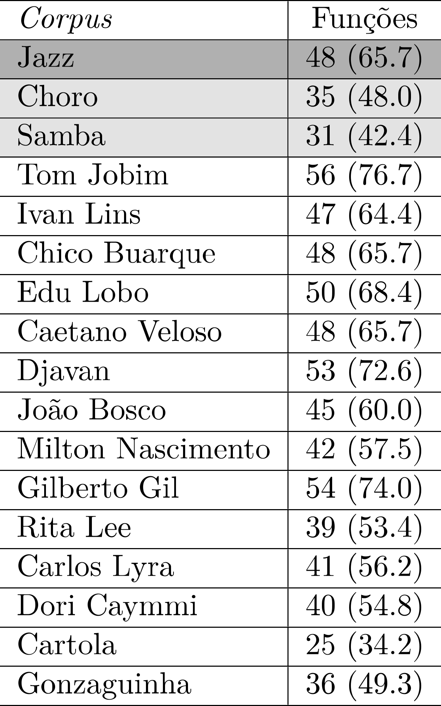
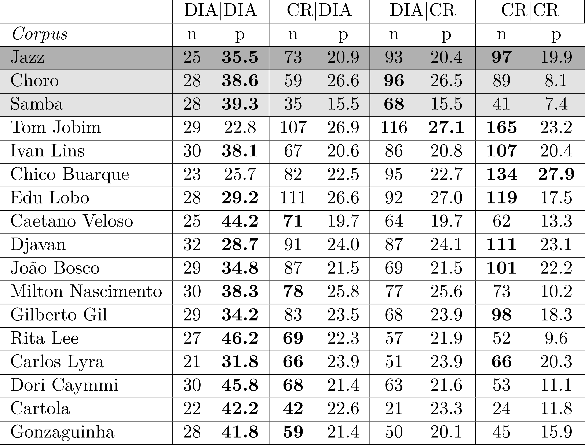

Atributos secundários de avaliação
Os atributos secundários são essencialmente revisões (ou detalhamentos) de alguns atributos primários, de maneira a permitir a evidenciação de características peculiares de um(a) determinado(a) compositor(a) (ou de um pequeno grupo de compositores) em relação a um contexto estilístico mais amplo. Exposto de outro modo, enquanto atributos primários tendem a agrupar corpora (e os estilos composicionais a eles associados) formando superconjuntos, os secundários agem principalmente na segregação desses subconjuntos, tendendo a promover fronteiras estilísticas entre compositores. Além dessa diferença, ao contrário do que acontece com os primários, os atributos secundários geralmente são vinculados a hipóteses, a partir de conhecimentos informais pré-existentes.
ATRIBUTOS SECUNDÁRIOS HARMÔNICOS
2H1 – nível das relações tonais (contém três aspectos):
2H1a – informa a quantidade de relações binárias tonais (RBTs) distintas em cada corpus. A princípio, não é associado objetivamente a uma hipótese, tendo em vista que uma diversidade de RBTs não implica necessariamente maior complexidade. Os próximos atributos atuam nesse sentido, na busca de qualificar os tipos de relações e apresentar hipóteses mais consistentes.
2H1b – compara a distribuição das relações binárias tonais da superclasse “notáveis” com o restante do universo. Por hipótese, RBTs “não notáveis” são mais empregadas no contexto estilístico da MPB do que as “notáveis”. Assim, uma predominância de RBTs “notáveis” em um determinado corpus tenderia, potencialmente, a “afastá-lo” do subconjunto-alvo.
2H1c – examina em maiores detalhes os conteúdos das superclasses, considerando a distribuição de sete classes de RBTs, as “notáveis” HOM, REL, D/SD e as “não notáveis” MED, QUA, STM, TOM, TRI. Por hipótese, a predominância da classe MED é um indicativo de pertencimento ao subconjunto-alvo, ou seja, um marcador estilístico centrípeto (ver capítulo sobre estilo musical).
2H2 – nível dos tipos acordais (contém quatro aspectos):
2H2a – informa a quantidade de tipos acordais (TAs) distintos em cada corpus, bem como seu percentual em relação ao total, de acordo com o modelo GTA (ver capítulo sobre os modelos teóricos). Por hipótese, a diversidade de TAs seria um possível marcador centrípeto (também em relação ao subconjunto JAZZ).
2H2b – compara a distribuição dos conteúdos dos 10 genera de tipos acordais. Por hipótese, uma alta recorrência dos genera triádicos V, v em relação aos demais se torna um marcador estilístico centrífugo. Inversamente, uma distribuição mais significativa dos genera Z, z (independentemente dos demais) indicaria um marcador centrípeto. No entanto, este aspecto também seria característico do subconjunto JAZZ, demandando observações complementares para o refinamento da análise.
2H2c – compara as distribuições relativas de protoacordes e variantes acordais, agrupados. Por hipótese, o estilo MPB se caracteriza por uma significativa presença de tipos acordais variantes, em relação aos protoacordes, o que não se observaria tão intensamente no subconjunto JAZZ, constituindo , portanto, um possível fator diferenciador entre os dois contextos.
2H2d – refina o atributo 2H2c, diferenciando protoacordes e variantes de acordo com os respectivos genera.
2H3 – nível das funções (contém sete aspectos):
2H3a – informa a quantidade de categorias funcionais distintas em cada corpus e o respectivo percentual considerando o total de categorias adotadas (73). Por hipótese, a diversidade de categorias seria um marcador estilístico centrípeto (também em relação ao subconjunto JAZZ).
2H3b – compara a distribuição de 12 classes (e/ou subclasses) de categorias funcionais selecionadas (DIA, DS, IIs, SubV, D-dom, D-pte, D-bor, EM1, EM2, NPs, aNP, aSubV).
2H3c – refina o atributo 2H3b, examinando os conteúdos de cada classe, em separado.
2H3d – compara as classes de relações binárias funcionais, ou RBFs de alto-nível (DIA|DIA, CR|DIA, DIA|CR, CR|CR). Por hipótese, integrantes do subconjunto-alvo e do subconjunto JAZZ apresentariam distribuições significativas das classes que envolvam a categoria CR. A separação dos dois subconjuntos neste atributo requererá, por certo, exames e discussões suplementares.
2H3e – examina um dos subconjuntos da classe CR|DIA, a saber, DS|DIA. Não há hipóteses previamente associadas a este atributo.
2H3f – examina um dos subconjuntos da classe CR|DIA, a saber, LOC(DS/SubV)|DIA, em comparação com o atributo 2H3d. Por hipótese, a presença significativa de locuções representaria um elemento da interseção MPB/JAZZ. A separação dos dois subconjuntos neste atributo requererá, provavelmente, exames e discussões suplementares.
2H3g – examina um dos subconjuntos da classe DIA|CR, a saber, SD|sd, considerando ser esta uma das fórmulas harmônicas mais relevantes do idioma compartilhado. Não há hipóteses previamente associadas a este atributo.
ATRIBUTOS SECUNDÁRIOS MELÓDICOS
2M1 – nível das notas-funções (contém quatro aspectos):
2M1a – informa a distribuição das notas diatônicas em cada corpus, considerando os modos maior e menor. Não há hipóteses previamente associadas a este atributo.
2M1b – informa a distribuição das inflexões melódicas em relação às notas-estruturais. Não há hipóteses previamente associadas a este atributo.
2M1c – compara as distribuições das superclasses de notas-estruturais (básicas \(\times\) tensões). Por hipótese, a presença significativa de tensões é um forte marcador centrípeto para os subconjuntos MPB e JAZZ.
2M1d – detalha o atributo 2M1c, considerando as classes de notas-estruturais (tríade, tétrade, tensões simples e tensões alteradas). Por hipótese, melodias do subconjunto-alvo apoiam-se, em média, mais em tensões do que aquelas provenientes do subconjunto JAZZ e, significativamente, mais ainda do que as do superconjunto.
2M2 – nível das alturas (contém dois aspectos):
2M2a – compara as distribuições das classes básicas de c-letras (u, P/p, A/a, S/s) em cada corpus. Não há hipóteses previamente associadas a este atributo.
2M2b – detalha o atributo 2M2a, comparando as distribuições das c-letras em cada corpus. Não há hipóteses previamente associadas a este atributo.
2M3 – nível do ritmo (contém cinco aspectos):
2M3a – compara as distribuições dos perfis métricos dos corpora. Por hipótese, membros do subconjunto-alvo (especialmente aqueles que apresentam, em maior ou menor medida, influências do gênero SAMBA) se diferenciarão dos membros do subconjunto JAZZ por ocorrências de ataques mais significativa nos pontos 4 e 10.
2M3b – informa as distribuições de r-letras contramétricas (c, e, g, m, n, p, u) em cada corpus, incluindo sua presença percentual em relação ao todo das r-letras. Por hipótese, membros do subconjunto-alvo (especialmente aqueles que apresentam, em maior ou menor medida, influências do gênero SAMBA) se diferenciarão dos membros do subconjunto JAZZ pela massiva ococrrência de r-letras contramétricas.
2M3c – informa as distribuições de r-letras “tercinais” (d, f, i, k, o, s) em cada corpus, incluindo sua presença percentual em relação ao todo das r-letras. Não há hipóteses previamente associadas a este atributo.
2M3d – destaca de cada corpus os 10 mais recorrentes r-dissílabos. Não há hipóteses previamente associadas a este atributo.
2M3e – destaca de cada corpus os 10 mais recorrentes r-trissílabos, detectados a partir do atributo 2M3d. Não há hipóteses previamente associadas a este atributo.
RESULTADOS - Fase 1 (compositores 1 a 10)
Ao contrário do que é feito com os atributos primários, os secundários são apresentados em tabelas individuais e discutidos em seguida.
Atributos secundários harmônicos
2H1 (RELAÇÕES TONAIS)
2H1a

Discussão
Observa-se na tabela acima uma certa tendência de que os corpora MPB apresentem uma relativa alta diversidade de RBTs, em sintonia com o que acontece no corpus Jazz, o que sugere uma possível influência, ainda que vaga, no sentido de uma maior exuberância de soluções modulatórias. Nesse sentido, chama especialmente atenção a baixa quantidade de relações distintas no Samba, o que talvez reflita o fato de que modulações não sejam tão comuns como em outros gêneros e, consequentemente, a estabilidade tonal possa ser uma característica distinguidora.1 Essa conjectura abre uma via de pesquisa para estudos futuros.
2H1b
Discussão
Nota-se aqui também um possível definidor de fronteira entre a Prática Comum da MPB e o superconjunto representado pelos gêneros Samba e Choro, pois parece ser um marcador estilístico desse subconjunto uma maior presença de RBTs não notáveis. Entretanto, os repertórios de análise podem ser segmentados em dois grupos bem definidos: um envolvendo uma relativa baixa frequência de RBTs notáveis, em torno de 1/5 ou 1/4 dos casos (Jobim, Ivan Lins, Edu Lobo e Caetano Veloso) e o outro no qual tais relações abrangem de 40 % (Djavan) a 63 % (João Bosco), incluindo valores mais próximos à metade das ocorrências (Chico Buarque, Milton Nascimento, Gilberto Gil e Rita Lee).
2H1c

Discussão
Como sugerem os dados, este atributo refina o anterior, evidenciando a distribuição das classes de RBTs. A respeito às classes de relações predominantes em cada repertório, podemos considerar quatro grupos: (1) MED, nos corpora Jazz, Jobim, Ivan Lins, Edu Lobo (acima de 40 % do total) e, um pouco menos, Djavan e João Bosco; (2) REL, nos corpora Samba e, bem mais abaixo, Chico Buarque, Gilberto Gil e Rita Lee; (3) TOM: nos corpora Caetano Veloso e Milton Nascimento;2 (4) (D/SD): apenas no corpus Choro.
2H2 (TIPOS ACORDAIS)
2H2a

Discussão
O número de tipos acordais distintos por corpus consiste em um dos mais fortes marcadores estilísticos harmônicos – mais uma vez, reforçando a hipótese da influência jazzística. Todos os repertórios MPB apresentam-se em patamares altos nesse atributo (com especial destaque para os {corpora Jobim e Edu Lobo com, respectivamente, 75 e 73 TAs distintos, de um total de 161 possíveis).3
2H2b
Discussão
Um primeiro dado interessante na avaliação deste atributo é a convergência de quase todos os corpora em relação à proeminência do genus Y4 (por volta de 40 % do total, em média), o que reflete indubitavelmente o compartilhamento de propriedades sintáticas tonais e, mais especificamente, a presença de preparações dominantes – primárias e secundárias – nesses repertórios.5 A partir disso, observamos como os corpora analíticos (juntamente com o corpus Jazz e com as notáveis exceções dos Caetano Veloso, Milton Nascimento, Gilberto Gil e Rita Lee, nos quais a qualidade V tem forte presença) formam um grupo coeso em oposição aos controles Samba e Choro, no que diz respeito à maior presença dos genera Z/z em oposição aos triádicos V/v, numa razão média, aproximada, de 8:1 (e o inverso se observa nos dois repertórios). Esses resultados, mais uma vez, contribuem para confirmar a hipótese da existência de uma relação de influência Jazz → MPB no domínio da harmonia, que se revela aqui a uma forte preferência por tipos acordais tetrádicos.
2H2c

Discussão
A presença maciça de variantes de tipos acordais é também um marcador estilístico do subconjunto MPB. No entanto, os dados permitem estabelecer três grupos de situações: (a) os repertórios Choro e Samba são bastante convergentes neste atributo, ao apresentar um número quase irrelevante de TAs variantes; (b) ainda que em número maior, as variantes no corpus Jazz são superadas pelos protoacordes em uma razão 2:1; (c) nos corpora MPB observa-se, em média, uma paridade aproximada entre protoacordes e variantes (destacando-se o caso especial do corpus Ivan Lins, com as variantes representando quase 3/4 do total de TAs) e Edu Lobo (quase 2/3).6 Os resultados contribuem para reforçar a hipótese sobre a influência harmônica do Jazz, porém, neste caso, sugerem uma intensificação na complexidade acordal (em relação ao modelo jazzístico) como uma possível característica da Prática Comum da MPB, o que pode ser detalhado no exame de outros atributos.
2H2d

Discussão
O detalhamento do atributo anterior traz, embora em magnitudes diferentes, uma convergência dos três repertórios de controle para o protoacorde Y0.7 Já na maior parte dos repertórios de análise, a proeminência recai sobre variantes do mesmo genus (que se apresentam caracteristicamente em grande diversidade), o que pode se constituir um interessante e sutil marcador estilístico, a depender de futuros estudos para sua confirmação. Interessantemente, o genus mais recorrente de Caetano Veloso (V) não apresenta variantes, apenas protoacordes, o que parece ser uma faceta estilística pessoal significativa.
2H3 (FUNÇÕES)
2H3a

Discussão
Neste atributo os corpora MPB mais uma vez se mostram em sintonia com o repertório jazzístico, apresentando uma alta diversidade de categorias funcionais (com um especial destaque ao corpus Jobim, abarcando cerca de 3/4 do total possível preconizado pelo modelo teórico adotado (ver capítulo sobre os modelos teóricos).8 Novamente, os repertórios de controle Samba e Choro apresentam diversidade semelhante, em níveis sensivelmente mais baixos em relação ao outro grupo, reforçando a separação dos dois conjuntos também no aspecto do vocabulário das categorias funcionais.
2H3b

Discussão
Em relação a classes (ou subclasses significativas) de categorias funcionais, observa-se inicialmente, como seria de se esperar, uma preponderância absoluta da classe DIA (com destaque especial do corpus Samba), o que apenas é reflexo de uma característica geral compartilhada por repertórios de música tonal. A especificidade funcional da MPB (em conjunção com a do corpus Jazz, como em outros atributos harmônicos) se evidencia na distribuição de outras classes, especialmente SubV e EC1, que apresentam relativamente maior peso do que nos corpora de controle Samba e Choro. No contexto dos repertórios de análise, o caso do corpus Milton Nascimento deve ser observado à parte, já que os dados associados a este atributo revelam inequivocamente as profundas diferenças na construção harmônica em comparação aos demais corpora. É, em especial, marcante os sensivelmente baixos valores das subclasses que compõem a classe funcional de acordes preparadores (DS, IIs, SubV, DIM), o que é fortemente sintomático de um tratamento eminentemente modal (veja especialmente a discrepância entre os percentuais envolvidos).
2H3c
Discussão
Nada de muito surpreendente surge nos dados apresentados na tabela acima: quase todos os corpora convergem para o I grau, como a categoria funcional mais recorrente da classe DIA. A única exceção – no corpus Chico Buarque – o V é o mais comum,9 o que não deixa de ser uma informação coerente com o que se observaria em qualquer repertório essencialmente tonal. Num nível mais apurado de observação, torna-se mais uma vez sintomática a distinção entre o corpus Milton Nascimento e os demais, devido à magnitude da presença do I grau (cerca de 10 pontos percentuais a mais em relação ao valor médio demais repertórios) e também considerando que supera V quase pelo triplo (em contraste com o máximo de duas vezes, nos demais corpora). Tal proeminência reduz consequentemente a importância dos demais graus diatônicos nesse repertório, contribuindo mais uma vez para enfatizar seu caráter essencialmente modal (através da diminuição da diversidade diatônica).

Discussão
Neste caso, há uma divisão das preferências em três grupos: pelo V/V (Choro, Jobim, Edu Lobo, Milton Nascimento e Rita Lee),10 pelo II cadencial (Jazz, Ivan Lins, Chico Buarque, Caetano Veloso, Djavan e Gilberto Gil) e V/II (Samba e João Bosco). Nenhuma conclusão sólida referente a estilo pode ser extraída desses resultados isoladamente.

Discussão
Os dados revelam que acordes da classe SUBV, embora menos comuns do que dominantes secundários, estão presentes em todos os repertórios (em menor frequência nos corpora Choro e Milton Nascimento – que mais uma vez destoa de seus pares em um atributo harmônico), com maior proeminência daqueles cujos alvos são o I (Jazz, Jobim e Edu Lobo) e o V graus (Choro, Samba, Ivan Lins, Chico Buarque, Caetano Veloso, Djavan, João Bosco, Gilberto Gil e Rita Lee). Tal situação não permite conclusões consistentes em relação a características estilísticas.11
Discussão
Em relação a este atributo, não há, como acima, evidências estilísticas a destacar. Contudo, é digno de nota o fato de que apenas os corpora Jobim, Chico Buarque e Djavan apresentam ocorrências de todos as seis categorias de diminutos-dominantes.

Discussão
Com a exceção do corpus Milton Nascimento, todos os repertórios apresentam ocorrências do diminuto-ponte bIII° (ainda que nos corpora João Bosco, Rita Lee, Gilberto Gil e, especialmente, Ivan Lins isso se dê em um nível bastante baixo), o que faz dessa categoria uma característica funcional compartilhada como opção de acesso ao II grau.

Discussão
Como esperado, os diminutos-bordadura mostram-se como a mais raros da subclasse DIM. Em relação às categorias componentes, como se observa na acima, todos os corpora (com a exceção de Ivan Lins e Milton Nascimento, nos quais diminutos-bordadura são inexistentes) apresentam relativamente maior ocorrência do I°. Apenas no repertório Jazz são registradas presenças das três categorias.

Discussão
A relativa presença de empréstimos é certamente um forte marcador estilístico da Prática Comum da MPB, a partir de uma suposta herança jazzística. O quadro apresentado acima deixa, por si só, tal fato evidente. A distribuição das categorias funcionais dessa classe em quase todos os repertórios tende a convergir para o IVm7 como a mais proeminente, com três exceções: (1) nos casos do corpora Ivan Lins e Jazz, bVII7 é a categoria mais comum, porém diverge pouco em termos gerais de IVm7, já que ambas pertencem à mesma subclasse, “Subdominante menor” (sd); (2) no corpus Caetano Veloso, a preferência é pelo bVIM7, uma categoria, como as anteriores integrante do grupo “Subdominante menor” (o que torna as opções, na prática, equivalentes); (3) Por outro lado, nos corpora Edu Lobo e Gilberto Gil Vm7 é a categoria mais recorrente, talvez refletindo a presença de lógicas modais nos repertórios dos compositores,12 ou seja, podendo representar uma característica estilística pessoal mais significativa; (4) Atribuímos a uma razão semelhante a recorrência da categoria bVIIM7 como a mais comum (e bem acima das demais) no corpus Milton Nascimento.13

Discussão
Apesar de sua relativa raridade, os empréstimos de segunda ordem contribuem ainda com mais intensidade para a marcação das fronteiras da MPB em relação ao superconjunto no qual se insere. Como mostram os dados, o corpus Jobim é o que mais se destaca nesse atributo, sendo o único no qual todas as categorias mapeadas estão presentes. Observe-se também a proeminência em todos os repertórios da categoria IV7.14


Discussão
As distribuições referentes à classe NPS e às subclasses (da classe aPRE) aNP e aSubV, mostradas nas três tabelas anteriores, são tão rarefeitas – em todos os repertórios – que não constituem uma base consistente para qualquer discussão significativa sobre estilo e, portanto, não serão aqui comentadas.
2H3d

Discussão
O número de RBFs distintas varia consideravelmente – de 178 (Samba) a 438 (Jobim). Como em outros atributos, percebemos no subconjunto MPB uma subdivisão em dois blocos: um deles (incluindo aqui o corpus Jazz), composto pela maioria dos repertórios, mantém, em média, 310 RBFs distintas. O segundo bloco é ocupado pelos corpora Caetano Veloso e, especialmente, Rita Lee, com números de relações consideravelmente menores, respectivamente, 222 e 205 (enquanto, em comparação, o Choro congrega 285 RBFs). Mais uma vez, distinções internas entre os compositores MPB na esfera harmônica se evidenciam, o que suscita avaliações complementares futuras.
2H3e
Discussão
Há, em termos percentuais, uma convergência geral pelas RBFs em alto nível DIA|DIA,15 excetuando-se os corpora Jobim e Chico Buarque, nos quais a predominância recai sobre, respectivamente, DIA|CR, CR|CR.16
Referências
Notas de rodapé
Num patamar intermediário, em torno de 15 %, encontram-se os corpora Chico Buarque, João Bosco, Gilberto Gil e Rita Lee.↩︎
O que poderia ser visto como um interessante marcador estilístico compartilhado, embora, provavelmente, a força dessa classe não em ambos os repertórios não advenha das mesmas razões. Afinal, as obras desses compositores divergem consideravelmente em relação ao aspecto estético e, também, em respeito à construção harmônica, tendo em vista o fato de que a música de Milton é fortemente modal, ao contrário do que se observa nas composições de Caetano. Subjacentemente, salta aos olhos a extraordinária semelhança dos percentuais apurados referente a esse atributo específico.↩︎
Nesse quadro, os tropicalistas Caetano Veloso, Gilberto Gil e Rita Lee ocupariam uma posição intermediária entre os dois níveis, o que parece ser coerente com as afinidades estéticas que apresentam.↩︎
A única e notável exceção se apresenta no repertório de Milton Nascimento, que privilegia a qualidade básica de tríade maior (seguida proximamente pelo tipo básico z). Bastante interessante ainda é a discrepância em relação à tríade menor, cerca de oito vezes menos comum do que a maior). Como discutido na avaliação dos atributos primários, esse resultado é um forte sintoma do tratamento predominante modal da música do compositor. Outros fatos relacionados aos tipos acordais reforçam essa interpretação: além da relativa baixa ocorrência do genus Y (se comparada aos dos demais corpora), registre-se também a raridade dos genera meio-diminuto (y) e diminuto (x), elementos com certa presença em repertórios tonais.↩︎
Mais uma vez, Caetano Veloso e Gilberto Gil ocupam uma posição intermediária dentro do subconjunto MPB, com os protoacordes superando as variantes em mais do que o dobro. Já no repertório de Rita Lee essa diferença é ainda mais acentuada (apenas 16.7 % são variantes).↩︎
O que é acompanhado pelos corpora Gilberto Gil e Rita Lee.↩︎
Jobim é seguido bem de perto por Gilberto Gil e Djavan. Por outro lado, Milton Nascimento é o corpus que apresenta a menor quantidade de categorias funcionais, o que parece consistente com sua linguagem predominantemente modal.↩︎
Na verdade, o V é a segunda categoria mais comum nos demais repertórios, quase empatando em frequência com o I no corpus Samba.↩︎
À parte a recorrência dessa categoria funcional – diríamos, quase “normal”, em comparação aos demais – o repertório de Milton Nascimento se notabiliza pela raridade dos demais dominantes secundários, o que é novamente um fator que sugere uma preferência pelo modalismo.↩︎
Um dado especialmente interessante é a ausência de manifestações do SubV primário no Rita Lee.↩︎
A categoria também tem uma relativa proeminência no repertório de Milton Nascimento (o mais modal dos compositores analisados), o que reforça essa conjectura.↩︎
A categoria também é a mais comum no repertório de Rita Lee, mas por certo influenciada pela lógica do rock, que é acentuada na música dessa compositora.↩︎
Especialmente nos corpora Rita Lee (5.4 %) e Gilberto Gil (4.0 %), o que denota uma provável influência do gênero rhythm and blues na música de ambos os compositores. Acrescente-se que no repertório de Jobim a categoria IV7 pode ser vista como um elemento característico proveniente da incorporação de aspectos da prática harmônica do jazz e do blues-jazz, como discutido em (Almada 2022, 260–68).↩︎
Destacando-se o peso expressivo dessa RBF nos corpora Rita Lee (46.2 %) e Caetano Veloso (44.2 %), os mais altos percentuais de todos, incluindo os repertórios de controle.↩︎
Este atributo mais uma vez contribui para reforçar a impressão de ser a harmonia jobiniana mais complexa e excêntrica do que as de seus pares.↩︎